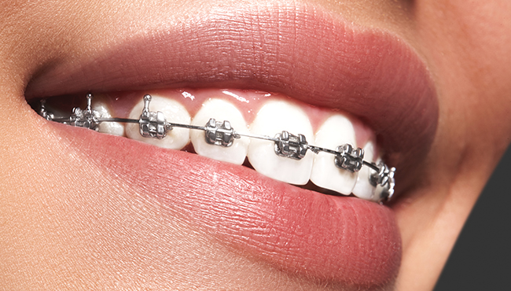

歯並びが気になる～矯正歯科～

千歳船橋駅から徒歩3分の立地にある「中村歯科医院」では、歯並びを正しく整える矯正歯科にも対応している歯医者です。歯並びや咬み合わせの乱れは見た目によるコンプレックスだけの問題ではありません。ブラッシングがしづらく、磨き残しが増えるためむし歯や歯周病のリスクが高まり、さらには肩こりや頭痛の原因にもなります。
つまり矯正治療で歯並びや咬み合わせを整えることにより、心身ともに健康上のトラブルを減らすことができるのです。歯を矯正することによる多くのメリットをご紹介します。
矯正治療を行う4つのメリット
| 【メリット01】 歯並びが整い口元に自信をもてる |
【メリット02】 ブラッシングが容易になる |
|---|---|
| 歯並びを整えることで、口元の印象をよくできます。咬み合わせの改善によって顔の筋肉のバランスがよくなり、輪郭が整う効果も期待できます。人前でのスピーチや笑顔にも自信が持てるようになるでしょう。 | 歯並びのデコボコがなくなることでブラッシングがしやすくなり、歯の隅々まで磨けるようになります。歯の汚れを効率よく落とせるようになり、ブラッシングの時間も短縮できます。 |
| 【メリット03】 むし歯や歯周病を予防できる |
【メリット04】 頭痛や肩こりの改善を期待できる |
|---|---|
| 歯の隅々までしっかりと磨けるようになるため、歯垢（プラーク）や歯石ができにくくなり、むし歯や歯周病の予防につながります。 | 歯並びがよくなることで咬み合わせが改善するだけでなく、脊髄のゆがみを正し頭痛や肩こりなどの症状の改善が見込めます。 |
当院の矯正治療はお子さんから成人まで対応
歯列矯正は子どもの頃に行うものというイメージがありますが、成人してから治療を始めることも可能です。患者様の年齢に関係なく、歯並びの状況を確認し、最適な治療をご提案いたします。治療前にはしっかりとカウンセリングを行い、患者様の不安を解消したうえでご要望にお応えします。
※部分矯正を除いた治療には、分割払いをご利用いただけます。
小児矯正について

お子さんの歯並びや顎の成長についてご不明な点や気になる点があれば、ご相談ください。小児矯正には乳歯から永久歯へ生え替わる混合歯列期に行う「一期治療」と、永久歯が生え揃ったタイミングで行う「二期治療」の2つがあります。一期治療では歯がきちんと生えるように顎の成長を助ける意味があります。二期治療は永久歯の生え方を整えることを目的としています。
当院では、お子さんへの矯正治療に多くの実績があります。実際に治療を受けるのはお子さんですので、しっかりとわかるようにご説明し、お気持ちを尊重したうえで治療に入りますのでご安心ください。
当院の取り扱い矯正装置
当院では主にクリアブラケットまたはセラミックブラケットを使用し、目立たない臼歯部にはメタルブラケットを使用しています。一人ひとりにどの矯正装置が合うのかを見極め矯正治療を行っていきます。
メタルブラケット
金属製のブラケットとワイヤーを歯に装着し、歯並びを整えて行きます。金属製なので目立ちやすく、金属アレルギーを引き起こす可能性がありますが、安価に作製できるので多くの患者様に選ばれています。装置は薄くて丈夫なうえに調整がしやすく、比較的短時間で治療が済み、通院回数も抑えられます。
クリアブラケット

金属アレルギーのリスクはありますが、透明のプラスチックやセラミックなどで作られたブラケットを使用しているため、矯正装置を目立ちにくくできます。白くコーティングされたワイヤーを用いることで、より審美性を高められます。歯や顎の小さい日本人向けに開発されたもので、装着感も良好です。
セラミックブラケット
ブラケットの素材にセラミックを使用し、天然の歯に近い色味を持っています。メタルブラケットより費用がかかりますが、その分目立ちにくく、クリアブラケットと比べて変色しにくいのが特徴です。金属を使っていないためアレルギーの心配もありません。
リンガルアーチ
リンガル（舌側）の意味通り、ブラケットを歯の裏側に装着することで、正面からは装置が目立ちにくいのが特徴です。汚れを目視しにくいため、丁寧なブラッシングが必要です。装置が舌に当たりやすく、慣れるまでに時間を要します。
床矯正
永久歯が生え始めたお子さん向けの矯正治療です。一期治療として混合歯列期に使用します。顎が狭くて歯並びが悪くなっている場合、装置をつけることで顎を広げ、歯が並ぶスペースを確保。整った歯並びにすることでブラッシングの精度が上がるため、むし歯の予防にもつながります。
矯正歯科治療の流れ
- 1口腔内チェックと.カウンセリング
- 患者様の口腔内のチェックとカウンセリングを行い、矯正治療へのご要望やご不明な点をお聞きします。矯正治療のメリットや治療にかかる期間、費用について詳しくご説明します。
- 2口腔内の精密検査
- 口腔内の写真やレントゲンを使って検査を行います。治療に必要な歯の形や口腔内の情報をまとめた診断用資料を作成します。
- 3診断結果をもとに治療プランを選定
- 精密検査の結果をもとに、患者様のご要望に最大限配慮した治療プランをご提案します。十分な説明を行い、患者様にご納得いただいたうえで、矯正治療を行うかどうかを判断していただきます。
- 4ブラッシングの練習
-
矯正治療ではブラケットなどの装置を歯に装着するため、ブラッシングが難しくなります。磨き残しによってむし歯や歯周病の原因をつくらないために、当院の歯科衛生士の指導のもと、ブラッシングの練習を行います。
※ブラッシング指導は矯正装置をつけてからも定期的に続けて行きますのでご安心ください。
- 5矯正装置の装着
-
矯正装置を歯に取り付ける治療は、治療内容にもよりますが、だいたい1時間ほどかかります。
※徐々に矯正装置の装着に慣れていただくため、週に1度、30分ほどに分けて行うことも可能です。
- 6矯正治療開始
- 矯正装置を装着して治療をスタートします。一般的には3～6週間に1度のペースで通院していただきます。
治療期間には個人差がありますが、成人の方の場合ですと1年6ヵ月～2年6ヵ月ほどかかることが一般的です。
部分的な歯の矯正にも対応します
部分的に歯並びを治したい場合は、「MTM（マイナー・トゥース・ムーブメント）」を用いて1～数本の歯に限定した矯正治療を行います。歯列全体を動かす矯正治療は2～3年かかるのに対し、MTMを使った部分矯正の場合は半年ほどの短期間で治療が終わります。インプラント治療と合わせて、歯並びの一部を修正する場合などにも効果的です。
矯正治療中は食いしばりや歯ぎしりに注意
重い荷物を運ぶときや強いストレスを感じたときなど、人は無意識のうちに歯を食いしばっています。また、眠っている間に無意識のうちに歯ぎしりをしている方も多くいます。食いしばりや歯ぎしりは歯並びに影響を与えてしまうため、当院ではスプリント療法によって改善のお手伝いをします。スプリント療法とは、患者様から型をとったマウスピースを装着することで、顎や口周りの筋肉の緊張を取り除き、食いしばりや歯切りしで歯にかかる負担を分散させる治療法です。